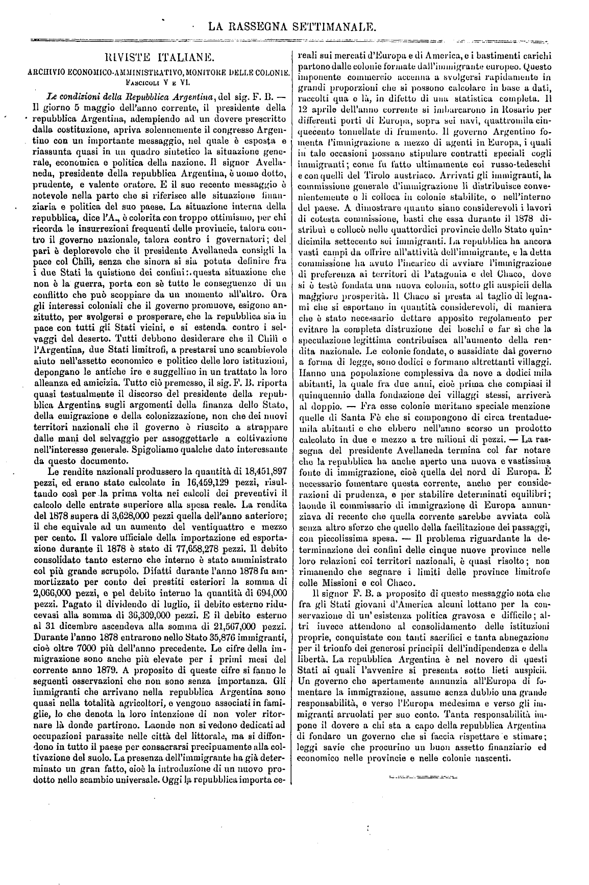
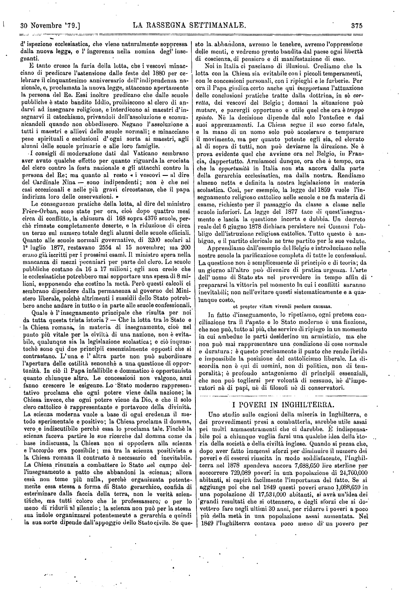
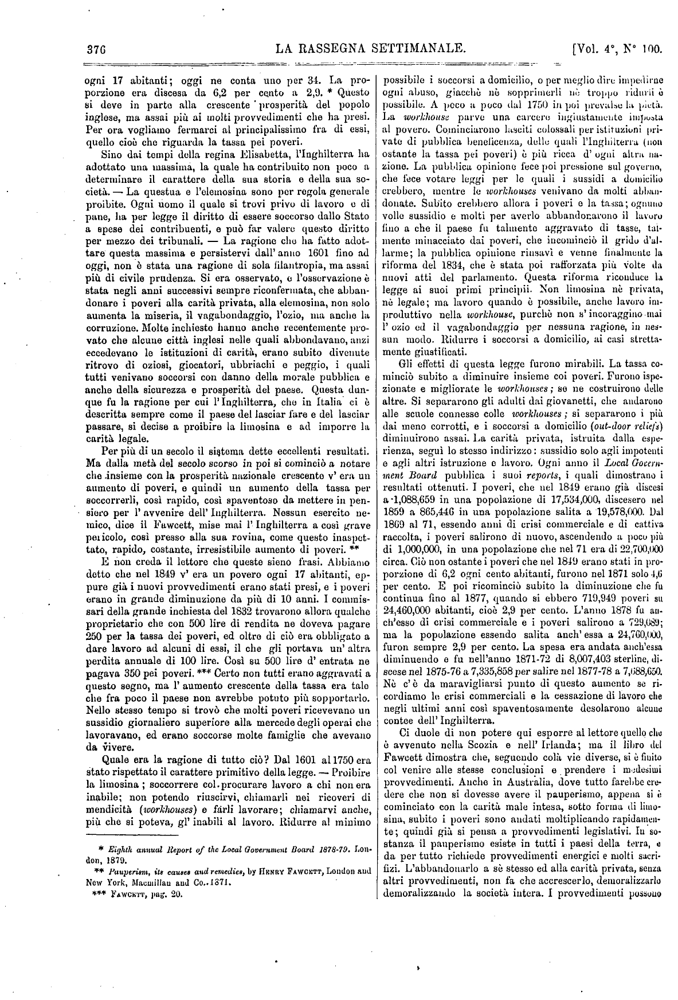
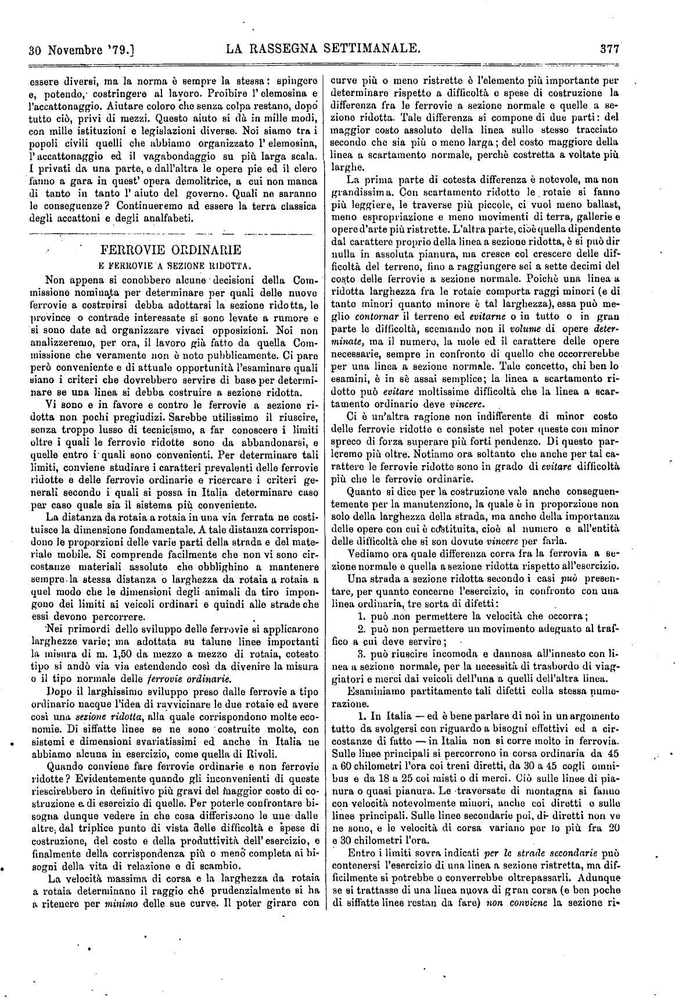
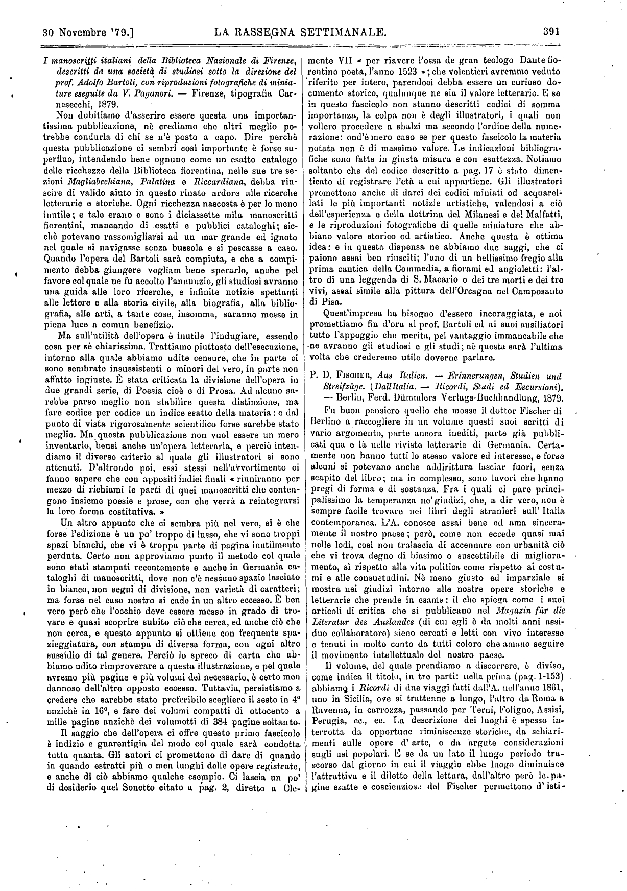
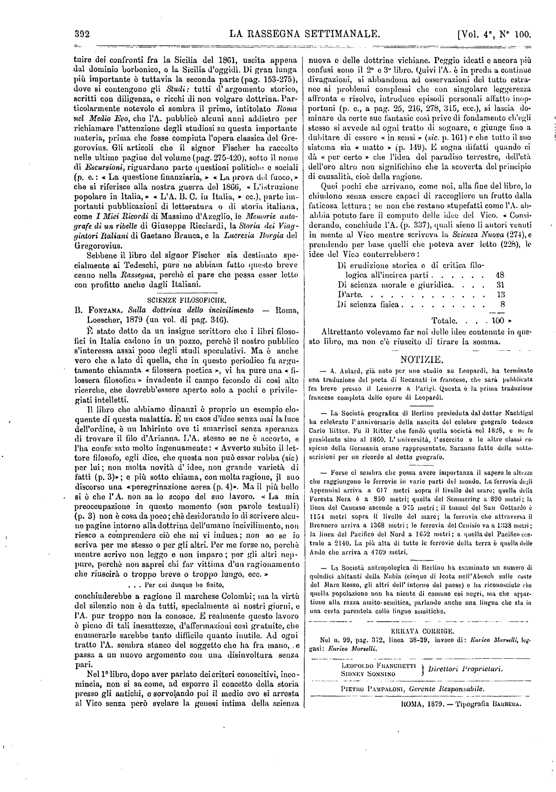
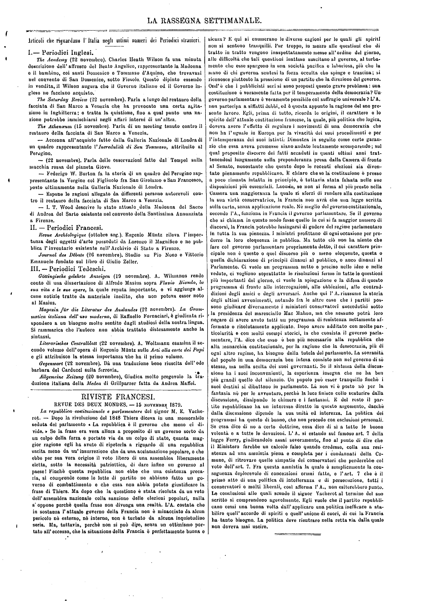

Facsimile


Trascrizione
Riviste Italiane
Il giorno 5 maggio dell'anno corrente, il presidente della
repubblica Argentina, adempiendo ad un dovere preiscritto
dalla costituzione, apriva solennemente il congresso Argen-
tino con un importante messaggio, nel quale è esposta e
riassunta quasi in un quadro sintetico la situazione gene-
rale, economica e politica della nazione. Il signorAvella-
neda, presidente della repubblica Argentina, è uomo dotto,
prudente, e valente oratore. E il suo recente messaggio è
notevole nella parte che si riferisce alla situazione finan-
ziaria e politica del suo paese. La situazione interna della
repubblica, dice l'A.Avellaneda, è colorita con troppo ottimismo, per chi
ricorda le insurrezioni frequenti delle provincie, talora con-
tro il governo nazionale, talora contro i governatori; del
pari è deplorevole che il presidente Avellaneda consigli la
pace col Chilì, senza che finora si sia potuta definire fra
i due Stati la questone dei confini: questa situazione che
non è la guerra, porta con sè tutte le conseguenze di un
conflitto che può scoppiare da un momento all'altro. Ora
gli interessi coloniali che il governo promuove, esigono an-
zitutto, per svolgersi e prosperare, che la repubblica sia in
pace con tutti gli Stati vicini, e si estenda contro i sel-
vaggi del deserto. Tutti debbono desiderare che il Chilì e
l'Argentina, due Stati limitrofi, a prestarsi uno scambievole
aiuto nell'assetto economico e politico delle loro istituzioni,
depongano le antiche ire e suggellino in un trattato la loro
alleanza ed amicizia. Tutto ciò premesso, il sign. F.B. riporta
quasi testualmente il discorso del presidente della repub-
blica Argentinasugli argomenti della finanza dello Stato,
della emigrazione e della colonizzazione, non che dei nuovi
territori nazionali che il governo è riuscito a strappare
dalle mani del selvaggio per assoggettarle a coltivazione
nell'interesse generale. Spigoliamo qualche dato interessante
da questo documento.
Le rendite nazionali produssero la quantità di 18,451,897
pezzi, ed erano state calcolate in 16,459,129 pezzi, risultando
così per la prima volta nei calcoli dei preventivi il
calcolo delle entrate superiore alla spesa reale. La rendita
del 1878 supera di 3,628,000 pezzi quella dell’anno anteriore;
il che equivale ad un aumento del ventiquattro e mezzo
per cento. Il valore ufficiale della importazione ed esporta-
zione durante il 1878 è stato di 77,658,278 pezzi. Il debito
consolidato tanto esterno che interno è stato amministrato
col più grande scrupolo. Difatti durante l’anno 1878 fu am-
mortizzato per conto dei prestiti esteriori la somma di
2,066,000 pezzi, e per debito interno la quantità di 694,000
pezzi. Pagato il dividendo di luglio, il debito esterno ridu-
cevasi alla somma di 36,309,000 pezzi. E il debito esterno
al 31 dicembre ascendeva alla somma di 21,567,000 pezzi.
Durante l’anno 1878 entrarono nello Stato 35,876 immigranti,
cioè oltre 7000 più dell’anno precedente. Le cifre della im-
migrazione sono anche più elevate per i primi mesi del
corrente anno 1879. A proposito di queste cifre si fanno le
seguenti osservazioni che non sono senza importanza. Gli
immigranti che arrivano nella repubblica Argentina sono
quasi nella totalità agricoltori, e vengono associati in fami-
glie, lo che denota la loro intenzione di non voler ritor-
nare laddove partirono. Laddove non si vedono dedicati ad
occupazioni parassite nelle città del littorale, ma si diffon-
dono in tutto il paese per consacrarsi precipuamente alla col-
tivazione del suolo. La presenza dell’immigrante ha già deter-
minato un gran fatto, cioè la introduzione di un nuovo pro-
dotto nello scambio universale. Oggi la repubblica importa ce-
reali sui mercati d’Europa e d'America, e i bastimenti carichi
partono dalle colonie formate dall’immigrante europeo. Questo
imponente commercio accenna a svolgersi rapidamente in
grandi proporzioni che si possono calcolare in base a dati,
raccolti qua e là, in difetto di una statistica completa. Il
12 aprile dell’anno corrente si imbarcarono da Rosario per
differenti porti d'Europa, sopra sei navi, quattromila cin-
quecento tonnellate di frumento. Il governo Argentino fo-
menta l’immigrazione a mezzo di agenti in Europa, i quali
in tale occasioni possano stipulare contratti speciali cogli
immigranti ; come fu fatto ultimamente coi russo-tedeschi
e con quelli del Tirolo austriaco. Arrivati gli immigranti, la
commissione generale d’immigrazione li distribuisce conve-
nientemente e li colloca in colonie stabilite, o nell’interno
del paese. A dimostrare quanto siano considerevoli i lavori
di cotesta commissione, basti che essa durante il 1878 di-
stribuì e collocò nelle quattordici provincie dello Stato quin-
dicimila settecento sei immigranti. La repubblica ha ancora
vasti campi da offrire all’attività dell’immigrante, e la detta
commissione ha avuto l’incarico di avviare l’immigrazione
di preferenza ai territori di Patagonia e del Chaco, dove
si è testò fondata una nuova colonia, sotto gli auspicii della
maggiore prosperità. Il Chaco si presta al taglio di legna-
mi che si esportano in quantità considerevoli, di maniera
che è stato necessario dettare apposito regolamento per
evitare la completa distruzione dei boschi e far sì che la
speculazione legittima contribuisca all’aumento della ren-
dita nazionale. Le colonie fondate, o sussidiate dal governo
a forma di legge, sono dodici e formano altrettanti villaggi.
Hanno una popolazione complessiva da nove a dodici mila
abitanti, la quale fra due anni, cioè prima che compia il
quinquennio dalla fondazione dei villaggi stessi, arriverà
al doppio. — Fra esse colonie meritano speciale menzione
quelle di Santa Fè che si compongono di circa trentadue-
mila abitanti e che ebbero nell’anno scorso un prodotto
calcolato in due e mezzo a tre milioni di pezzi. — La ras-
segna del presidente Avellaneda termina col far notare
che la repubblica ha anche aperto una nuova e vastissima
fonte di immigrazione, cioè quella del nord di Europa. E'
necessario fomentare questa corrente, anche per conside-
razioni di prudenza, e per stabilire determinati equilibri;
laddove il commissario di immigrazione di Europa annun-
ziava di recente che quella corrente sarebbe avviata colà
senza altro sforzo che quello della facilitazione dei passaggi,
con piccolissima spesa. — Il problema riguardante la de-
terminazione dei confini delle cinque nuove province nelle
loro relazioni coi territori nazionali, è quasi risolto ; non
rimanendo che segnare i limiti delle province limitrofe
colle Missioni e col Chaco.
Il signor F. B. a proposito di questo messaggio nota che
fra gli Stati giovani d’America alcuni lottano per la con-
servazione di un’ esistenza politica gravosa e difficile ; al-
tri invece attendono al consolidamento delle istituzioni
proprie, conquistate con tanti sacrifici e tanta abnegazione
per il trionfo dei generosi principii dell’indipendenza e della
libertà. La repubblica Argentina è nel novero di questi
Stati ai quali l’avvenire si presenta sotto lieti auspicii.
Un governo che apertamente annunzia all’Europa di fo-
mentare l'immigrazione, assume senza dubbio una grande
responsabilità, e verso l’Europa medesima e verso gli im-
migranti arruolati per suo conto. Tanta responsabilità im-
pone il dovere a chi sta a capo della repubblica Argentina
di fondare un governo che si faccia rispettare e stimare;
leggi savie che procurino un buon assetto finanziario ed
economico nelle provincie e nelle colonie nascenti.
I poveri in Inghilterra
Uno studio sulle cagioni della miseria in Inghilterra, e
dei provvedimenti presi a combatterla, sarebbe utile assai
pei molti ammaestramenti che ci darebbe. E indispensa-
bile poi a chiunque voglia farsi una qualche idea della sto-
ria della società e della civiltà inglese. Quando si pensa che,
dopo aver fatto immensi sforzi per diminuire il numero dei
poveri e di esserci riuscita in modo soddisfacente, l’Inghil-
terra nel 1878 spendeva ancora 7,688,650 lire sterline per
soccorrere 729,089 poveri in una popolazione di 24,760,000
abitanti, si capirà facilmente l’importanza del fatto. Se si
aggiunge poi che nel 1849 questi poveri erano 1,088,659 in
una popolazione di 17,534,000 abitanti, si avrà un’idea dei
‘grandi risultati che si ottennero, e degli sforzi che si do--
vettero fare negli ultimi 30 anni, per ridurre i poveri a poco
più della metà in una popolazione assai aumentata. Nel
1849 l’Inghilterra contava poco meno di' un povero per
ogni 17 abitanti; oggi ne conta uno per 34. La pro-
porzione era discesa da 6,2 per cento a 2,9. * Questo
si deve in parto alla crescente ’ prosperità del popolo
inglese, ma assai piu ai molti provvedimenti che ha preso.
Per ora vogliamo fermarci al principalissimo fra di essi,
quello cioè che riguarda la tassa dei poveri.
Sino dai tempi della regina Elisabetta, l’Inghilterra ha
adottato una massima, la quale ha contribuito non poco a
determinare il carattere della sua storia e della sua so-
cietà.— La questua e l’elemosina sono per regola generale
proibite. Ogni uomo il quale si trovi privo di lavoro e di
pane, ha per legge il diritto di essere soccorso dallo Stato
a spese dei contribuenti, e può far valere questo diritto
per mezzo dei tribunali. — La ragione che ha fatto adot-
tare questa massima e persistervi dall’ anno 1601 fino ad
oggi, non è stata una ragione di sola filantropia, ma assai
più di civile prudenza. Si era osservato, e l’osservazione è
stata negli anni successivi sempre riconfermata, che abban-
donare i poveri alla carità privata, alla elemosina, non solo
aumenta la miseria, il vagabondaggio, l’ozio, ma anche la
corruzione. Molte inchiesto hanno anche recentemente pro-
vato che alcune città inglesi nelle quali abbondavano, anzi
eccedevano le istituzioni di carità, erano subito divenute
ritrovo di oziosi, giocatori, ubbriachi e peggio, i quali
tutti venivano soccorsi con danno della morale pubblica e
anche della sicurezza e prosperità del paese. Questa dun-
que fu la ragione per cui l’Inghilterra, che in Italia ci è
descritta sempre come il paese del lasciar fare e del lasciar
passare, si decise a proibire la limosina e ad imporre la
carità legale.
Per più di un secolo il sistema dette eccellenti risultati.
Ma dalla metà del secolo scorso in poi si cominciò a notare
che insieme con la prosperità nazionale crescente c’ era un
aumento di poveri, e quindi un aumento della tassa per
soccorrerli, così rapido, così spaventoso da mettere in pen-
siero per l’ avvenire dell’ Inghilterra. Nessun esercito nemico,
dice il Fawcett, mise mai l’ Inghilterra a così grave
pericolo, così presso alla sua rovina, come questo inaspet-
tato rapido, costante, irresistibile aumento di poveri. **
E non creda il lettore che queste sieno frasi. Abbiamo
detto che nel 1849 v’ era un povero ogni 17 abitanti, ep-
pure già i nuovi provvedimenti erano stati presi, e i poveri
erano in grande diminuzione da più di 10 anni. I commis-
sari della grande inchiesta del 1832 trovarono allora qualche
proprietario che con 500 lire di rendita ne doveva pagare
250 per la tassa dei poveri, ed oltre di ciò era obbligato a
dare lavoro ad alcuni di essi, il che gli portava un’ altra
perdita annuale di 100 lire. Così su 500 lire d’ entrata ne
pagava 350 pei poveri. *** Certo non tutti erano aggravati a
questo segno, ma 1’ aumento crescente della tassa era tale
che fra poco il paese non avrebbe potuto più sopportarlo.
Nello stesso tempo si trovò che molti poveri ricevevano un
sussidio giornaliero superiore alla mercede degli operai che
lavoravano, ed erano soccorse molte famiglie che avevano
da vivere.
Quale era la ragione di tutto ciò? Dal 1601 al 1750 era
stato rispettato il carattere primitivo della legge. — Proibire
la limosina; soccorrere col procurare lavoro a chi non era
inabile; non potendo riuscirvi, chiamarli nei ricoveri di
mendicità (workhouses) e farli lavorare; chiamarvi anche,
più che si poteva, gl’ inabili al lavoro. Ridurre al minimo
possibile i soccorsi a domicilio, o per meglio dire impedirne
ogni abuso, giacché nè sopprimerli nè troppo ridurli è
possibile. A poco a poco dal 1750 in poi prevalse la pietà.
La workhouse parve una carcere ingiustamente imposta
al povero. Cominciarono lasciti colossali per istituzioni pri-
vate di pubblica beneficenza, delle quali l’Inghilterra (non-
ostante la tassa dei poveri) è più ricca d’ ogni altra na-
zione. La pubblica opinione fece poi pressione sul governo,
che fece votare leggi per le quali i sussidi a domicilio
crebbero, mentre le workhouses venivano da molti abban-
donate. Subito crebbero allora i poveri e la tassa; ognuno
volle sussidio e molti per averlo abbandonarono il lavoro
fino a che il paese fu talmente aggravato di tasse, tal-
mente minacciato dai poveri, che incominciò il grido d’al-
larme; la pubblica opinione rinsavì e venne finalmente la
riforma del 1834, che è stata poi rafforzata più volte da
nuovi atti del parlamento. Questa riforma riconduce la
legge ai suoi primi principii. Non limosina nè privata,
nè legale; ma lavoro quando è possibile, anche lavoro improduttivo
nella workhouse, purché non s’ incoraggino mai
1’ ozio ed il vagabondaggio per nessuna ragione, in nes-
sun modo. Ridurre i soccorsi a domicilio, ai casi stretta-
mente giustificati.
Gli effetti di questa legge furono mirabili. La tassa co-
minciò subito a diminuire insieme coi poveri. Furono ispe-
zionate e migliorate le workhouses ; se ne costruirono delle
altre. Si separarono gli adulti dai giovanetti, che andarono
alle scuole connesse colle ioorkhouses ; si separarono i più
dai meno corrotti, e i soccorsi a domicilio (out-door reliefs)
diminuirono assai. La carità privata, istruita dalla espe-
rienza, seguì lo stesso indirizzo : sussidio solo agli impotenti
e agli altri istruzione e lavoro. Ogni anno il Local Gocern-
ment Board pubblica i suoi reports, i quali dimostrano i
resultati ottenuti. I poveri, che nel 1849 erano già discesi
a -1,088,659 in una popolazione di 17,534,000, discesero nel
1859 a 865,446 in una popolazione salita a 19,578,000. Dal
1869 al 71, essendo anni di crisi commerciale e di cattiva
raccolta, i poveri salirono di nuovo, ascendendo a poco più
di 1,000,000, in una popolazione che nel 71 era di 22,700,000
circa. Ciò nonostante i poveri che nel 1849 erano stati in pro-
porzione di 6,2 ogni cento abitanti, furono nel 1871 solo 4,6
per cento. E poi ricominciò subito la diminuzione che fu
continua fino al 1877, quando si ebbero 719,949 poveri su
24,460,000 abitanti, cioè 2,9 per cento. L’anno 1878 fu an-
ch'esso di crisi commerciale e i poveri salirono a 729,089;
ma la popolazione essendo salita anch’ essa a 24,760,000,
furon sempre 2,9 per cento. La spesa era andata anch’essa
diminuendo e fu nell’anno 1871-72 di 8,007,403 sterline, di-
scese nel 1875-76 a 7,335,858 per salire nel 1877-78 a 7,688,650.
Nè c’ è da maravigliarsi punto di questo aumento se ri-
cordiamo le crisi commerciali e la cessazione di lavoro che
negli ultimi anni così spaventosamente desolarono alcune
contee dell’ Inghilterra.
Ci duole di non potere qui esporre al lettore quello che
è avvenuto nella Scozia e nell’ Irlanda; ma il libro del
Fawcett dimostra che, seguendo colà vie diverse, si è finito
col venire alle stesse conclusioni e prendere i medesimi
provvedimenti. Anche in Australia, dove tutto farebbe cre-
dere che non si dovesse avere il pauperismo, appena si è
cominciato con la carità male intesa, sotto forma di limo-
sina, subito i poveri sono andati moltiplicando rapidamen-
te; quindi già si pensa a provvedimenti legislativi. In so-
stanza il pauperismo esiste in tutti i paesi della terra, e
da per tutto richiede provvedimenti energici e molti sacri-
fici. L’abbandonarlo a sé stesso ed alla carità privata, seuza
altri provvedimenti, non fa che accrescerlo, demoralizzarlo
demoralizzando la società intera. I provvedimenti possono
essere diversi, ma la norma è sempre la stessa : spingere
e, potendo,- costringere al lavoro. Proibire l’ elemosina e
l’accattonaggio. Aiutare coloro che senza colpa restano, dopo*
tutto ciò, privi di mezzi. Questo aiuto si dà in mille modi,
con mille istituzioni e legislazioni diverse. Noi siamo tra i
popoli civili quelli che abbiamo organizzato 1’ elemosina,
l’accattonaggio ed il vagabondaggio su più larga scala.
I privati da una parte, e dall’altra le opere pie ed il clero
l'hanno a gara in quest’ opera demolitrice, a cui non manca
di tanto in tanto 1’ aiuto del governo. Quali ne saranno
le conseguenze? Continueremo ad essere la terra classica
degli accattoni e degli analfabeti.
Dall'Italia. - Ricordi, Studi ed Escursioni.
Paul David Fischer -Berlino
1879
Fu buon pensiero quello che mosse il dottor Fischer di
Berlino a raccogliere in un volume questi suoi scritti di
vario argomento, parte ancora inediti, parte già pubbli-
cati qua e là nelle riviste letterarie di Germania. Certa-
mente non hanno tutti lo stesso valore ed interesse, e forse
alcuni si potevano anche addirittura lasciar fuori, senza
scapito del libro; ma in complesso, sono lavori che hanno
pregi di forma e di sostanza. Fra i quali ci pare princi-
palissimo la temperanza ne’ giudizi, che, a dir vero, non è
sempre facile trovare nei libri degli stranieri sull’ Italia
contemporanea. L’A. conosce assai bene ed ama sincera-
mente il nostro paese ; però, come non eccede quasi mai
nelle lodi, così non tralascia di accennare con urbanità ciò
che vi trova degno di biasimo o suscettibile di migliora-
mento, sì rispetto alla vita politica come rispetto ai costu-
mi e alle consuetudini. Nè meno giusto ed imparziale si
mostra nei giudizi intorno alle nostre opere storiche e
letterarie che prende in esame : il che spiega come i suoi
articoli di critica che si pubblicano nel Magazin für die
Literatur des Auslandes (di cui egli è da molti anni assi-
duo collaboratore) siano cercati e letti con vivo interesse
e tenuti in molto conto da tutti coloro che amano seguire
il movimento intellettuale del nostro paese.
Il volume, del quale prendiamo a discorrere, è diviso,
come indica il titolo, in tre parti: nella prima (pag. 1-153)
abbiamo i ricordi di due viaggi fatti dall’A. nell’anno 1861,
uno in Sicilia, ove si trattenne a lungo, l’altro da Roma a
Ravenna, in carrozza, passando per Terni, Foligno, Assisi,
Perugia, ecc., ecc. La descrizione dei luoghi è spesso in-
terrotta da opportune riminiscenze storiche, da schiari-
menti sulle opere d’ arte, e da argute considerazioni
sugli usi popolari. E se da un lato il lungo periodo tra-
scorso dal giorno in cui il viaggio ebbe luogo diminuisce
l’attrattiva e il diletto della lettura, dall’altro però le pa-
gine esatte e coscienziose del Fischer permettono d’ isti-
tuire dei confronti fra la Sicilia del 1861, uscita appena
dal dominio borbonico, e la Sicilia d’oggi. Di gran lunga
più importante ò tuttavia la seconda parte (pag. 153-275),
dove si contengono gli Studi : tutti d’ argomento storico,
scritti con diligenza, e ricchi di non volgare dottrina. Particolarmente
notevole ci sembra il primo, intitolato Roma
nel Medio Evo, che l’A. pubblicò alcuni anni addietro per
richiamare l’attenzione degli studiosi su questa importante
materia, prima che fosse compiuta l’opera classica del Gregorovius.
Gli articoli che il signor Fischer ha raccolto
nelle ultime pagine del volume (pag. 275-420), sotto il nome
di Escursioni, riguardano parte questioni politiche e sociali
(p. e. : « La questione finanziaria, » « La prova del fuoco,»
che si riferisce alla nostra guerra del 1866, « L’istruzione
popolare in Italia, » « L’A. B. C. in Italia, » ecc.), parte importanti
pubblicazioni di letteratura o di storia italiana,
come I Miei Ricordi di Massimo d’Àzeglio, le Memorie autografe
di un ribelle di Giuseppe Ricciardi, la Storia dei Viaggiatori
Italiani di Gaetano Branca, e la Lucrezia Borgia del
Gregorovius.
Sebbene il libro del signor Fischer sia destinato specialmente
ai Tedeschi, pure ne abbiain fatto questo breve
cenno nella Rassegna, perchè ci pare che possa esser letto
con profitto anche dagli Italiani.
Scienze Filosofiche
Bartolommeo Fontana -Roma
1879
È stato detto da un insigne scrittore che i libri filoso-
fici in Italia cadono in un pozzo, perchè il nostro pubblico
s’interessa assai poco degli studi speculativi. Ma è anche
vero che a lato di quella, che in questo periodico fu argu-
tamente chiamata « filossera poetica », vi ha pure una « fi-
lossera filosofica » invadente il campo fecondo di così alte
ricerche, che dovrebb’essere aperto solo a pochi e privile-
giati intelletti.
Il libro che abbiamo dinanzi è proprio un esempio elo-
quente di questa malattia. E uu caos d’idee senza mai la luce
dell’ordine, è un labirinto ove ti smarrisci senza speranza
di trovare il filo d’Arianna. L’A. stesso se ne è accorto, e
l’ha confessato molto ingenuamente: « Avverto subito il let-
tore filosofo, egli dice, che questa non può esser roba (sic)
per lui; non molta novità d’ idee, non grande varietà di
fatti (p. 3)»; e più sotto chiama, con molta ragione, il suo
discorso una «peregrinazione aerea (p. 4)». Ma il più bello
si è che l’A. non sa lo scopo del suo lavoro. « La mia
preoccupazione in questo momento (son parole testuali)
(p. 3) non è cosa da poco ; chè desiderando io di scrivere alcu-
ne pagine intorno alla dottrina dell’umano incivilimento, non
riesco a comprendere ciò che mi vi induca ; non so se io
scriva per me stesso o per gli altri. Per me forse no, perchè
mentre scrivo non leggo e non imparo; per gli altri nep-
pure, perchè non saprei chi far vittima d’un ragionamento
che riuscirà o troppo breve o troppo lungo, ecc. »
. . . Per cui dunque ho finito,
conchiuderebbe a ragione il marchese Colombi; ma la virtù
del silenzio non è da tutti, specialmente ai nostri giorni, e
l’A. pur troppo non la conosce. E realmente questo lavoro
è pieno di tali inesattezze, d’affermazioni così gratuite, che
enumerarle sarebbe tanto difficile quanto inutile. Ad ogni
tratto l’A. sembra stanco del soggetto che ha fra mano, . e
passa a uu nuovo argomento con una disinvoltura senza
pari. Nel 1° libro, dopo aver parlato dei criteri conoscitivi, inco-
mincia, non si sa come, ad esporre il concetto della storia
presso gli antichi, e sorvolando poi il medio evo si arresta
al Vico senza però svelare la genesi intima della scienza
nuova e delle dottrine vichiane. Peggio ideati e ancora più
confusi sono il 2° e 3° libro. Quivi l’A. è in preda a continue
divagazioni, si abbandona ad osservazioni del tutto estra-
nee ai problemi complessi che con singolare leggerezza
affronta e risolve, introduce episodi personali affatto inop-
portuni (p. e., a pag. 25, 216, 278, 315, ecc.), si lascia do-
minare da certe sue fantasie così prive di fondamento ch’egli
stesso si avvede ad ogni tratto di sognare, e giunge fino a
dubitare di essere « in sensi » (sic. p. 161) e che tutto il suo
sistema sia « inatto » (p. 149). E sogna difatti quando ci
dà « per certo » che l’idea del paradiso terrestre, dell’età
dell’oro altro non significhino che la scoverta del principio
di causalità, cioè della ragione.
Quei pochi che arrivano, come noi, alla fine del libro, lo
chiudono senza essere capaci di raccogliere un frutto dalla
faticosa lettura; se non che restano stupefatti come l’A. ab-
bia potuto fare il computo delle idee del Vico. « Consi-
derando conclude l’A. (p. 337), quali siano gli autori venuti
in mente al Vico mentre scriveva la Scienza Nuova (274), e
prendendo per base quelli che poteva aver letto (228), le
idee del Vico conterrebbero :
Di erudizione storica e di critica filo-
logica all’incirca parti ...... 48
Di scienza morale e giuridica. . . . 31
D’arte. ............ 13
Di scienza fisica. ........ 8
Totale. . . 100 »
Altrettanto volevamo far noi delle idee contenute in que-
sto libro, ma non c’è riuscito di tirare la somma.
Periodici Inglesi
The Academy. —22 Novembre.
Charles Heath Wilsonfa una minuta
descrizione dell’ affresco del Beato Angelico, rappresentante la Madonna
con il bambino, coi santi Domenico o Tommaso d’Aquino, che trovavasi
nel convento di San Domenico, sotto Fiesole. Questo dipinto essendo
in vendita, il Wilson augura che il Governo italiano o il Governo in-
glese ne facciano acquisto.
The Saturday Review. —22 Novembre.
Parla a lungo del restauro della
facciata di San Marco a Venezia che ha provocato una certa agita-
zione in Inghilterra; e tratta la questione, fino a qual punto una na-
zione potrebbe immischiarsi negli affari interni di un’ altra.
The Athenaeum. —15 Novembre.
Parla di un meeting tenuto contro il
restauro della facciata di San Marco a Venezia.
— Accenna all’acquisto fatto dalla Galleria Nazionale di Londra di
un quadro rappresentante l’Incredulità di San Tommaso, attribuito al
Perugino.
Parla delle osservazioni fatto dal Tempel sulla
macchia rossa del pianeta Giove.
— Federigo W. Burton fa la storia di un quadro del Perugino rap-
presentante la Vergine col Figliuolo fra San Girolamo e San Francesco,
posto ultimamente nella Galleria Nazionale di Londra.
— Espone le ragioni allegato da differenti persone autorevoli con-
tro il restauro della facciata di San Marco a Venezia.
— I. T. Wood descrivo lo stato attuale della Madonna del Sacco
di Andrea del Sarto esistente nel convento della Santissima Annunziata
a Firenze.
Periodici Francesi
Revue Archéologique. -Ottobre.
Eugenio Muntz rileva l’ impor-
tanza degli oggetti d’arte posseduti da Lorenzo il Magnifico e ne pub-
blica l’ inventario esistente nell’ Archivio di Stato a Firenze.
Journal des Débats. -19 Novembre
Studio su Pio Nono e Vittorio
Emanuele fondato sul libro di Giulio Zeller.